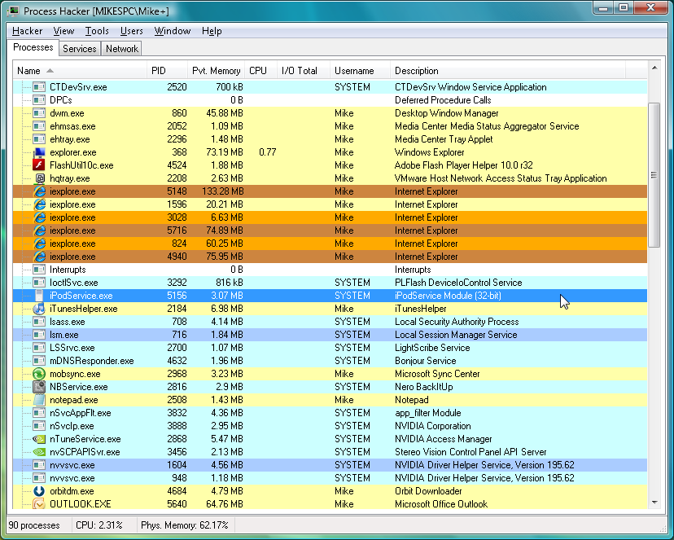

Process Hacker
Поделиться:
Process Hacker — бесплатная утилита с открытым исходным кодом для мониторинга системных процессов и служб, запущенных под управлением 32-битных и 64-разрядных операционных систем семейства Windows, используемая как замена или дополнение диспетчера задач Windows.

Возможности Process Hacker:
- просмотр статистики процессов;
- отображение графиков производительности;
- полная история выполнения процесса;
- отладка исполняемых программ;
- просмотр и закрытие сетевых подключений;
- завершение любых процессов